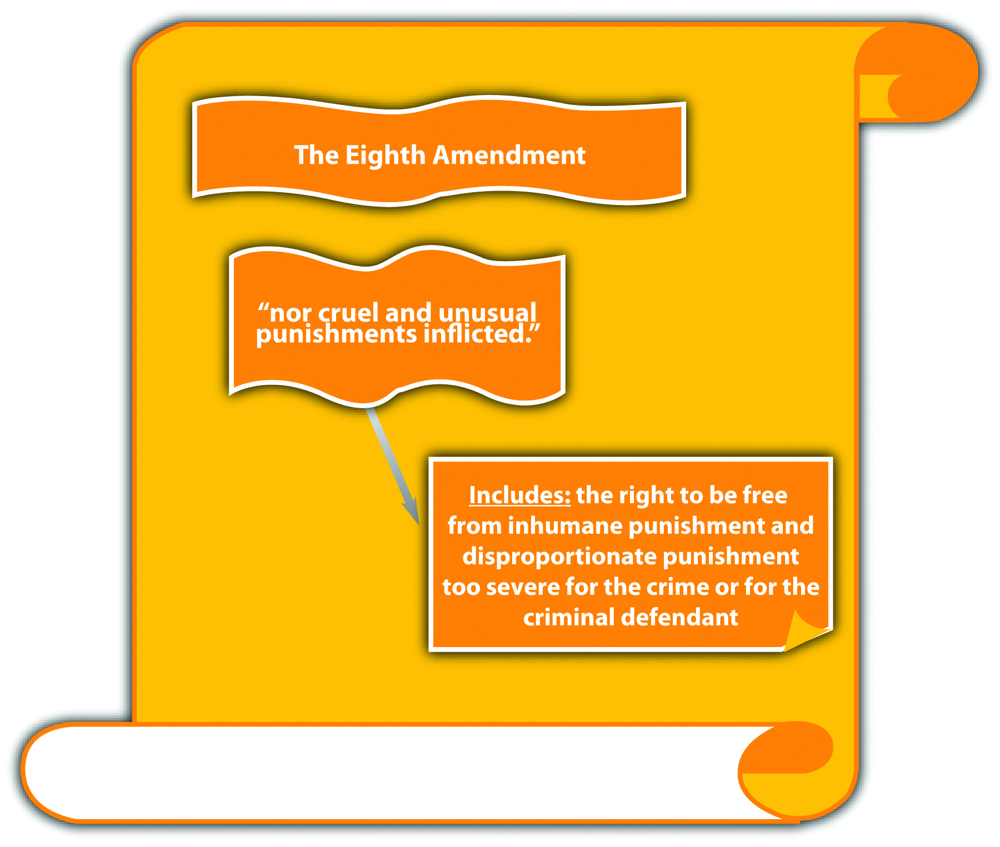
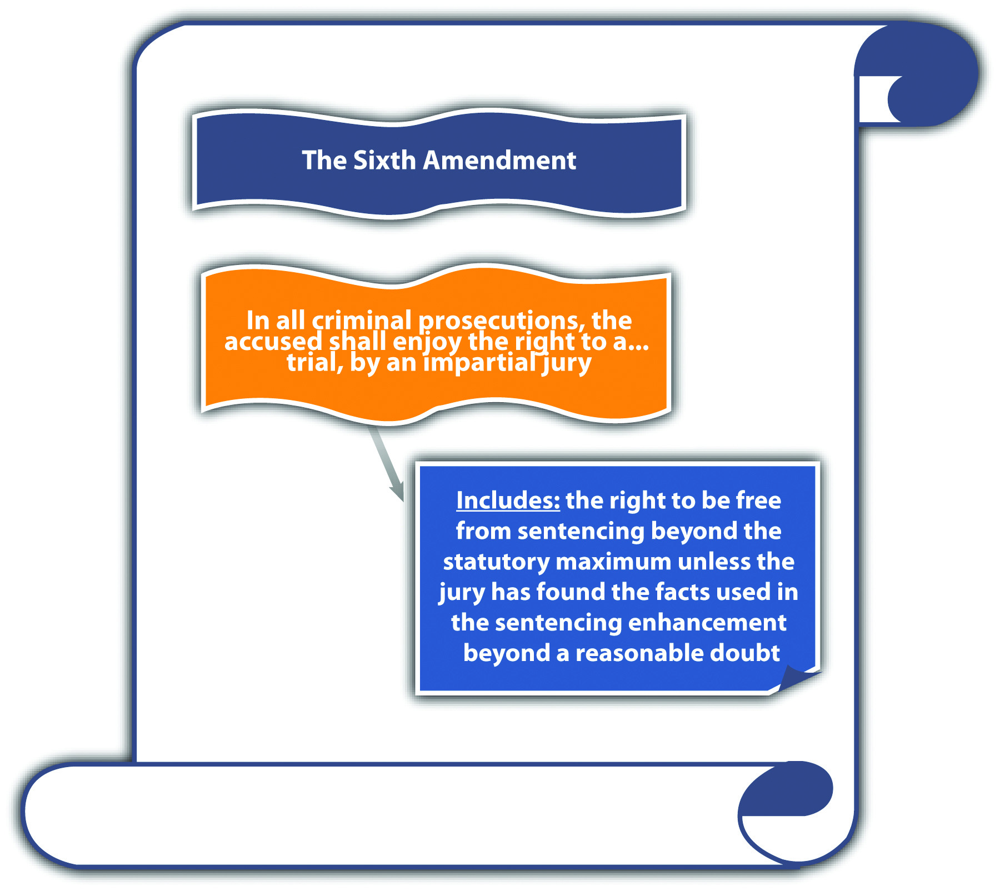
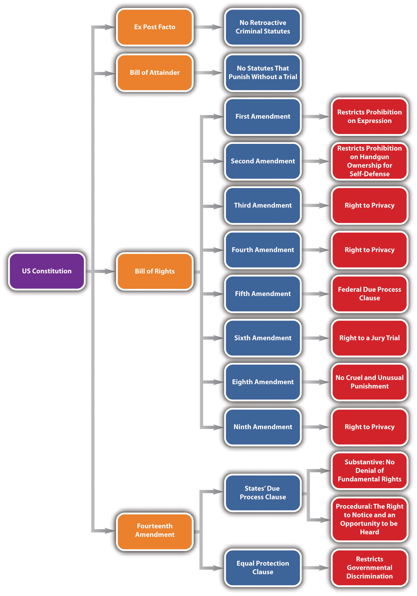

The prohibition against cruel and unusual punishment comes from the Eighth AmendmentProhibits inhumane and disproportionate punishments., which states, “Excessive bail shall not be required, nor excessive fines imposed, nor cruel and unusual punishments inflicted.” State constitutions often have similar provisions.Texas Constitution, art. I, § 13, accessed October 22, 2010, http://www.statutes.legis.state.tx.us/SOTWDocs/CN/htm/CN.1.htm. Although the ban on cruel and unusual punishment relates directly to sentencing, which is a criminal procedure issue, criminal statutes mandating various penalties can be held unconstitutional under the Eighth Amendment just like statutes offending the due process clause, so a brief discussion is relevant to this chapter. Another facet of excessive punishment is a criminal sentencing enhancement that is based on facts not found beyond a reasonable doubt by a jury. This has been held to violate the Sixth AmendmentGuarantees a criminal defendant the right to a jury trial., which states, “In all criminal prosecutions, the accused shall enjoy the right to a…trial, by an impartial jury of the State and district wherein the crime shall have been committed.”
In this section, three issues are analyzed and discussed: the infliction of cruel punishment, a criminal sentence that is too severe, and a criminal sentence that is invalid under the right to a jury trial.
In general, the government must refrain from inflicting cruel or barbaric punishments on criminal defendants in violation of the Eighth Amendment. In particular, cases asserting that a criminal punishment is inhumane often focus on capital punishmentThe death penalty., which is the death penalty.
The death penalty has been used as a criminal punishment since the eighteenth century BC. American death penalty law is influenced by the British because the colonists brought English common-law principles, including capital punishment, with them to the New World. The first execution in America took place in 1608, for spying.Death Penalty Information Center, “Introduction to the Death Penalty,” deathpenaltyinfo.org website, accessed October 17, 2010, http://www.deathpenaltyinfo.org/part-i-history-death-penalty. Methods of execution and capital crimes varied from colony to colony. In the late 1700s, a movement to abolish the death penalty began, and in 1846 Michigan was the first state to eliminate the death penalty for all crimes except treason.Death Penalty Information Center, “Introduction to the Death Penalty,” deathpenaltyinfo.org website, accessed October 17, 2010, http://www.deathpenaltyinfo.org/part-i-history-death-penalty. Throughout the nineteenth and twentieth centuries, the United States fluctuated in its attitude toward capital punishment. Executions were at an all-time high in the 1930s.Death Penalty Information Center, “Introduction to the Death Penalty,” deathpenaltyinfo.org website, accessed October 17, 2010, http://www.deathpenaltyinfo.org/part-i-history-death-penalty. However, in 1972, in the landmark decision of Furman v. Georgia, 408 U.S. 238 (1972), the US Supreme Court held that Georgia’s death penalty statute, which gave the jury complete discretion to sentence a criminal defendant to death, was arbitrary and therefore authorized cruel and unusual punishment in violation of the Eighth Amendment. This decision invalidated death penalty statutes in forty states. Later, in 1976, the US Supreme Court case of Gregg v. Georgia, 428 U.S. 153 (1976), affirmed the procedure of a bifurcated trial, separating the guilt phase from the penalty phase for death penalty cases. Gregg also affirmed the death penalty’s constitutionality under the Eighth Amendment. Currently, thirty-four states and the federal government authorize the death penalty, while sixteen states and the District of Columbia do not.Death Penalty Information Center, “States with and without the Death Penalty,” deathpenaltyinfo.org website, accessed October 14, 2010, http://www.deathpenaltyinfo.org/states-and-without-death-penalty.
A claim that capital punishment is inhumane and therefore unconstitutional under the Eighth Amendment focuses on the method of execution. Throughout the history of the death penalty, many methods of execution have been employed, including shooting, hanging, electrocution, the gas chamber, and lethal injection. At the time of this writing, the law is in a state of flux as to which methods of execution are constitutional because many state and federal decisions have stricken virtually every method available. The current focus of the courts is lethal injection because it is one of the few methods that has not been condemned as unconstitutional. Most states that authorize the death penalty use lethal injection as the primary method of execution. In a recent statement on this issue, the US Supreme Court in Baze v. Rees, 128 S. Ct. 1520 (2008), held that Kentucky’s four-drug lethal injection procedure was not cruel and unusual punishment under the Eighth Amendment. In other states, including Missouri and Tennessee, federal courts using different facts have ruled the multidrug procedure unconstitutional.Death Penalty Information Center, “Lethal Injection: Constitutional Issue,” deathpenaltyinfo.org website, accessed October 14, 2010, http://www.deathpenaltyinfo.org/lethal-injection-constitutional-issue. It is impossible to predict the future of death penalty methodology under the Eighth Amendment because each case will be decided based on the circumstances presented. However, it is clear that the law in this area is ripe for a definitive statement of constitutionality under the Eighth Amendment’s cruel and unusual punishment clause.
Disproportionate punishment is a different issue than inhumane punishment, but it is still within the parameters of the Eighth Amendment. Disproportionate punishment asserts that a criminal punishment is too severe for the crime. Two criminal punishments garner many disproportionate punishment claims: capital punishment and punishment pursuant to three-strikesStatutes that enhance a sentence when a defendant commits a felony after a previous conviction for one or two serious or violent felonies. statutes.
Capital punishment can be disproportionate because it is too severe for the crime or because it is too severe for the criminal defendant.
Death is the ultimate punishment, so it must be equivalent to the crime the defendant committed. Although the states and the federal government have designated many capital crimes that may not result in death, for example, treason that does not lead to death, the US Supreme Court has confirmed that the death penalty is too severe for most crimes. In Coker v. Georgia, 433 U.S. 584 (1977), the Court held that capital punishment is disproportionate for the crime of raping an adult woman. Many years later in Kennedy v. Louisiana, 128 S. Ct. 2641 (2008), the Court extended the disproportionality principle to invalidate the death penalty for child rape. Kennedy maintained the distinction between crimes committed against individuals and crimes committed against the government, like treason. The only crime against an individual that currently merits the death penalty is criminal homicide, which is the unlawful killing of one human being by another. Criminal homicide is discussed in detail in Chapter 9 "Criminal Homicide".
Figure 3.8 Crack the Code
Recent US Supreme Court precedent has targeted specific classifications of criminal defendants for whom capital punishment is overly severe. Recent cases hold that the death penalty is cruel and unusual punishment for a criminal defendant who was a juvenile when the crime was committed,Roper v. Simmons, 543 U.S. 551 (2005), accessed October 15, 2010, http://scholar.google.com/scholar_case?case=16987406842050815187&hl=en&as_sdt=2&as_vis=1&oi=scholarr. who is mentally ill,Ford v. Wainwright, 477 U.S. 399 (1986), accessed October 15, 2010, http://scholar.google.com/scholar_case?case=7904262174469084060&hl=en&as_sdt=2&as_vis=1&oi=scholarr. or has an intellectual disabilityAtkins v. Virginia, 536 U.S. 304 (2002), accessed October 15, 2010, http://scholar.google.com/scholar_case?case=2043469055777796288&hl=en&as_sdt=2&as_vis=1&oi=scholarr. at the time of the scheduled execution. Although states vary in their classifications of juveniles (discussed in detail in Chapter 6 "Criminal Defenses, Part 2"), the Eighth Amendment prohibits capital punishment for an individual who was under eighteen years of age when he or she committed criminal homicide. Mental illness could cover a variety of disorders, but the US Supreme Court has held that a criminal defendant has a constitutional right to a determination of sanity before execution.Ford v. Wainwright, 477 U.S. 399, 401 (1986), accessed October 15, 2010, http://scholar.google.com/scholar_case?case=7904262174469084060&hl=en&as_sdt=2&as_vis=1&oi=scholarr. Intellectual disability is distinct from mental illness and is defined by the US Supreme Court as a substantial intellectual impairment that impacts everyday life, and was present at the defendant’s birth or during childhood.Atkins v. Virginia, 536 U.S. 304, 318 (2002), accessed October 15, 2010, http://scholar.google.com/scholar_case?case=2043469055777796288&hl=en&as_sdt=2&as_vis=1&oi=scholarr. However, this standard is broad, so states vary in their legislative definitions of this classification.Death Penalty Information Center, “State Statutes Prohibiting the Death Penalty for People with Mental Retardation,” deathpenaltyinfo.org website, accessed October 14, 2010, http://www.deathpenaltyinfo.org/state-statutes-prohibiting-death-penalty-people-mental-retardation.
Jerry is sentenced to death for rape. The state death penalty statute specifies death by decapitation. While on death row, Jerry begins to hear voices and is diagnosed as schizophrenic by the prison psychiatrist. The state schedules the execution anyway. In this example, the state death penalty statute is inhumane because death by decapitation is too severe a punishment for any crime. The death penalty statute is also disproportionate to the crime because execution is not a constitutional punishment for the crime of rape. Lastly, the death penalty statute is disproportionate to Jerry, the criminal defendant, because it is cruel and unusual to execute someone who is mentally ill.
California was the first state to enact a “three strikes and you’re out” law.Cal. Penal Code § 667, accessed October 15, 2010, http://www.threestrikes.org/tslaw.html. Generally, three-strikes statutes punish habitual offenders more harshly when they commit a second or third felony after an initial serious or violent felony.Cal. Penal Code § 667, accessed October 15, 2010, http://www.threestrikes.org/tslaw.html. To date, California’s three-strikes law is the toughest in the nation; it mandates a minimum twenty-five-year- to life sentence for felons convicted of a third strike. California enacted its three-strikes legislation after the kidnapping, rape, and murder of Polly Klaas by a habitual offender. Twenty-four states followed, indicating public support for the incapacitation of career criminals.Three Strikes and You’re Out, “States That Have Three Strikes Laws,” threestrikes.org website, accessed October 15, 2010, http://www.threestrikes.org/3strikestates.html.
Three-strikes statutes vary, but those most likely to be attacked as disproportionate count any felony as a strike after an initial serious or violent felony. Counting any felony might levy a sentence of life in prison against a criminal defendant who commits a nonviolent felony. However, the US Supreme Court has upheld lengthy prison sentences under three-strikes statutes for relatively minor second or third offenses, holding that they are not cruel and unusual punishment under the Eighth Amendment.Ewing v. California, 538 U.S. 11 (2003), accessed October 15, 2010, http://caselaw.lp.findlaw.com/scripts/getcase.pl?court=us&vol=000&invol=01-6978.
Figure 3.9 The Eighth Amendment
Modern US Supreme Court precedent has expanded the jury’s role in sentencing pursuant to the Sixth Amendment. Although a detailed discussion of sentencing procedure is beyond the scope of this book, a brief overview of sentencing and the roles of the judge and jury is necessary to a fundamental understanding of this important trial right, as is set forth in the following section.
As stated in Chapter 2 "The Legal System in the United States", the trier of fact decides the facts and renders a decision on innocence or guilt using beyond a reasonable doubt as the standard for the burden of proof. The trier of fact in a criminal prosecution is almost always a jury because of the right to a jury trial in the Sixth Amendment. Occasionally, the defendant waives the right to a jury trial and has a bench trial with a judge playing the role of trier of fact. Although the jury determines innocence or guilt during a jury trial, the verdict defines the end of their role as the trier of fact, and the judge sets the sentence. The death penalty is an exception to the jury’s limited role in sentencing; a jury must decide whether to sentence the defendant to death at a separate hearing after the trial has concluded.
Generally, criminal sentencing takes place after the trial. Although the sentencing procedure varies from state to state and from state to federal, a sentencing hearing is typically held after guilt has been determined at trial or after a guilty plea. For many years, judges have had almost exclusive control of sentencing. Although judges are restricted by the fact-finding done at trial, they can receive new evidence at sentencing if it is relevant. For example, a judge is bound by a jury determination that the defendant used a weapon when committing an armed robbery. However, the judge can accept new evidence at sentencing that reveals the defendant had two prior convictions for armed robbery and can enhance the sentence under a habitual offender or three-strikes statute.
Until recently, judges could use evidence received at the sentencing hearing to enhance a sentence beyond the statutory maximum by making a determination of the new facts to a preponderance of evidence. However, in Apprendi v. New Jersey, 530 U.S. 466 (2000), the US Supreme Court held that the right to a jury trial prohibits judges from enhancing criminal sentences beyond the statutory maximum based on facts not determined by a jury beyond a reasonable doubt. In Apprendi, the trial court enhanced the defendant’s sentence beyond the statutory maximum for possession of a firearm with an unlawful purpose under New Jersey’s hate crimes statute. Although the jury did not determine that the defendant’s crime was a hate crime, the judge accepted new evidence at sentencing that indicated the defendant’s shooting into a residence was racially motivated. The US Supreme Court reversed the New Jersey Supreme Court, which upheld the sentencing procedure. The Court held that other than evidence of a prior conviction, a judge cannot enhance a defendant’s sentence beyond the statutory maximum unless there has been a factual determination by a jury beyond a reasonable doubt of the facts supporting the sentencing enhancement. The Court based its holding on the Sixth Amendment right to a jury trial as incorporated and applied to the states through the Fourteenth Amendment due process clause.
Post-Apprendi, this holding was extended to federal sentencing guidelines in U.S. v. Booker, 543 U.S. 220 (2005). In Booker, a federal judge enhanced a sentence following mandatory US Sentencing Guidelines, which permitted judges to find the sentencing enhancement facts using the preponderance of evidence standard. The US Supreme Court ruled that the enhancement was invalid under the Sixth Amendment right to a jury trial and held that the US Sentencing Guidelines would be advisory only, never mandatory. Booker was based on Blakely v. Washington, 542 U.S. 296 (2004), which invalidated a similar Washington State sentencing procedure.
Pursuant to Apprendi, Booker, and Blakely, a criminal defendant’s sentence is unconstitutional under the Sixth Amendment right to a jury trial if it is enhanced beyond the statutory maximum by facts that were not determined by a jury beyond a reasonable doubt. This premise applies in federal and state courts and also to guilty pleas rather than jury verdicts.Blakely v. Washington, 542 U.S. 296 (2004), accessed October 18, 2010, http://www.law.cornell.edu/supct/html/02-1632.ZO.html.
Ross is tried and convicted by a jury of simple kidnapping. The maximum sentence for simple kidnapping is five years. At Ross’s sentencing hearing, the judge hears testimony from Ross’s kidnapping victim about the physical and mental torture Ross inflicted during the kidnapping. The victim did not testify at trial. The judge finds that the victim’s testimony is credible and rules that Ross used cruelty during the kidnapping by a preponderance of evidence. The judge thereafter enhances Ross’s sentence to eight years, based on a statutory sentencing enhancement of three years for “deliberate cruelty inflicted during the commission of a crime.” The three-year sentencing enhancement is most likely unconstitutional. Under the Sixth Amendment right to a jury trial, the jury must find deliberate cruelty beyond a reasonable doubt. A court can strike the enhancement of three years on appeal, and on remand, the trial court cannot increase the sentence beyond the five-year maximum.
Figure 3.10 The Sixth Amendment
Figure 3.11 Diagram of Constitutional Defenses
Answer the following questions. Check your answers using the answer key at the end of the chapter.